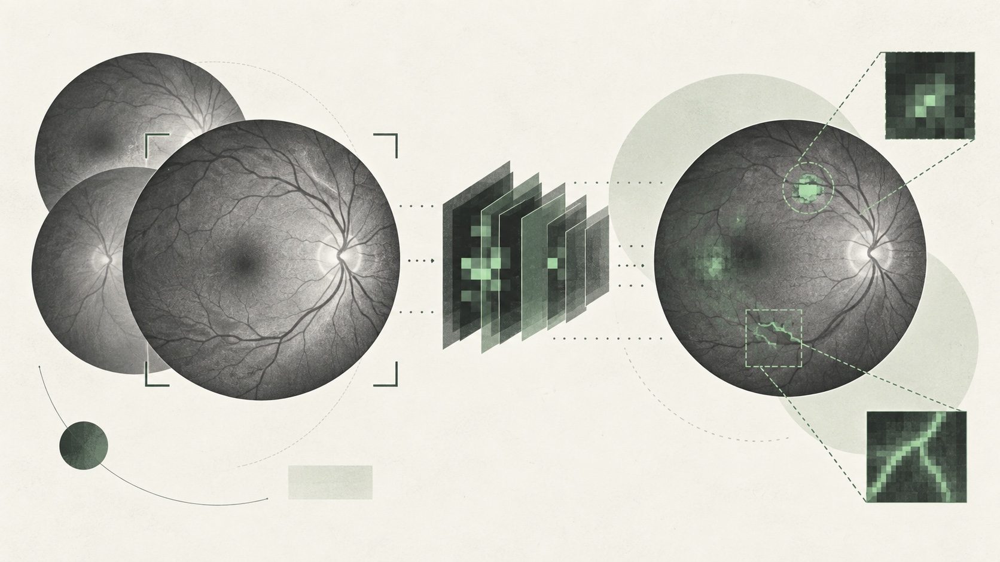

01 · Hero portrait · character reveal
Systems that don't hallucinate.
Teams that don't either.
Your portrait resolves into characters on hover or tap. The bottom keeps the same soft fade and blur as the mobile image.

Hover or tap ASCII to watch the reveal.
02 · Between hero and The Turn · passing ripple
A quiet movement between chapters.
Work delivered for clients in Singapore and Australia.
A short wave passes through the characters when this transition comes into view, then settles.
03 · Vision project · image to characters
A visual cue inside the project record.
Vision model training: accuracy was not the final review
Opening the record reveals the thumbnail as characters, with a scan that moves across the image.

Concept visualNot model output